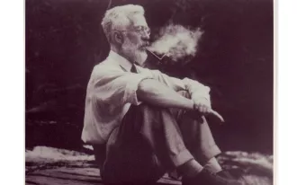
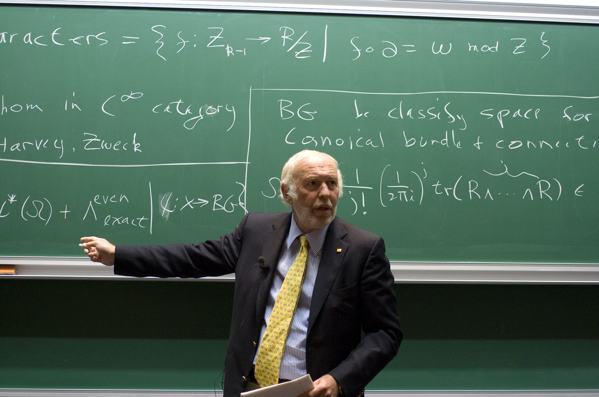
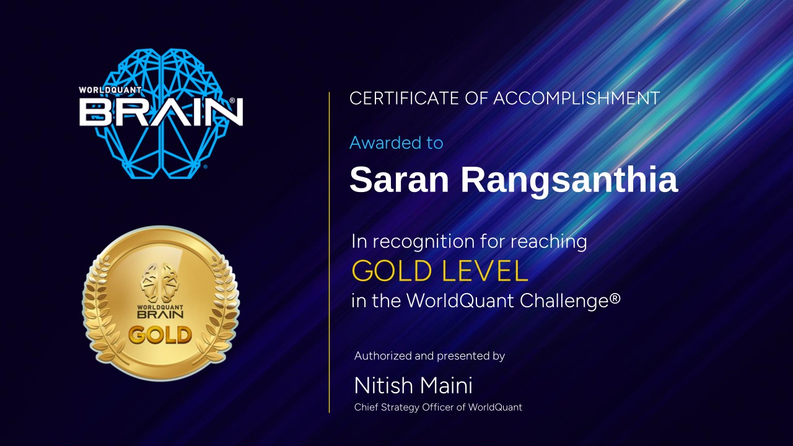

ชื่อ: ศรัณย์ รั่งสันเทียะ รหัสนักศึกษา: 6709616210 หลักสูตร: สถิติศาสตร์
สวัสดีครับ ผมชื่อต้าร์ นักศึกษาชั้นปีที่ 3 สาขาสถิติ มหาวิทยาลัยธรรมศาสตร์ สนใจการวิเคราะห์ข้อมูลและ Machine Learning เว็บไซต์นี้คือพอร์ตโฟลิโอชิ้นแรกที่รวบรวมสิ่งที่ผมได้เรียนรู้และสร้างขึ้น
มีความสนใจในด้าน Quantitative Finance, Data Science, and Machine Learning
ไอดอลของผมคือ:

Sir Ronald Aylmer Fisher (1890–1962) เป็นนักสถิติและนักพันธุศาสตร์ชาวอังกฤษ ผู้ได้รับการยกย่องว่าเป็นหนึ่งในบุคคลสำคัญที่สุดของสถิติศตวรรษที่ 20 และเป็นผู้วางรากฐานให้กับการออกแบบการทดลองและการทดสอบสมมุติฐานทางสถิติ

Jim Simons (1938–2024) เป็นนักคณิตศาสตร์ นักลงทุน และผู้ก่อตั้ง Renaissance Technologies ผู้ได้รับฉายา “Quant King” เพราะใช้คณิตศาสตร์และอัลกอริทึมในการลงทุน จนสร้างกองทุน Medallion Fund ที่ให้ผลตอบแทนสูงที่สุดในประวัติศาสตร์การเงิน
Title: CS100 A1:My First Learning Portfolio
Type: Course Assignment
Date: 30 Aug 2026
Role: Individual Developer
Description: พัฒนาเว็บไซต์ Learning Portfolio หน้าเดียวด้วย HTML และ CSS
Skills: HTML, CSS, Semantic HTML
Reflection: ผมมีปัญหาเรื่องเขียน HTML ได้ แต่ไม่รู้ว่าทำ CSS ยังไงจึงไปศึกษาเพิ่มเติมกับช่องยูทูป Bro code และใช้ LLM Copilot ในการช่วยเรื่อง syntax ทำให้ได้เรียนรู้และฝึก tacit knowledge ในด้านการทำ static website
Evidence: GitHub Repository https://github.com/srsrsrs123/myfirstcs100repo
Title: WorldQuant Challenge
Type: Competition
Date: Nov 2025
Role: Competitor
Description: เข้าร่วมการแข่งขัน WorldQuant Challenge เพื่อสร้างและทดสอบกลยุทธ์การลงทุนเชิงปริมาณด้วย Python จากข้อมูลตลาดการเงิน
Skills: Quantitative Finance, Python Programming
Reflection: ก่อนเข้าแข่งขัน ผมคิดว่าการทำ quant คือการหาสูตรที่ให้ผลตอบแทนดีที่สุด แต่พอลงมือทำจริงพบว่าปัญหาใหญ่คือการแยกว่าสัญญาณที่เจอเป็นของจริงหรือแค่บังเอิญจากข้อมูลในอดีต ผมจึงต้องกลับไปอ่านเรื่อง overfitting, time series และการทดสอบนอกช่วงข้อมูลที่ใช้สร้างโมเดล แล้วใช้ Python ลองตรวจผลซ้ำหลายครั้งผ่าน backtesting สิ่งที่ได้เรียนรู้คือการตั้งสมมติฐานก่อนแล้วจึงทดสอบ ไม่ใช่ปรับพารามิเตอร์จนผลดูสวย และการยอมรับผลที่ไม่เป็นไปตามที่คาดเป็นส่วนหนึ่งของงาน
Evidence: Certificate
